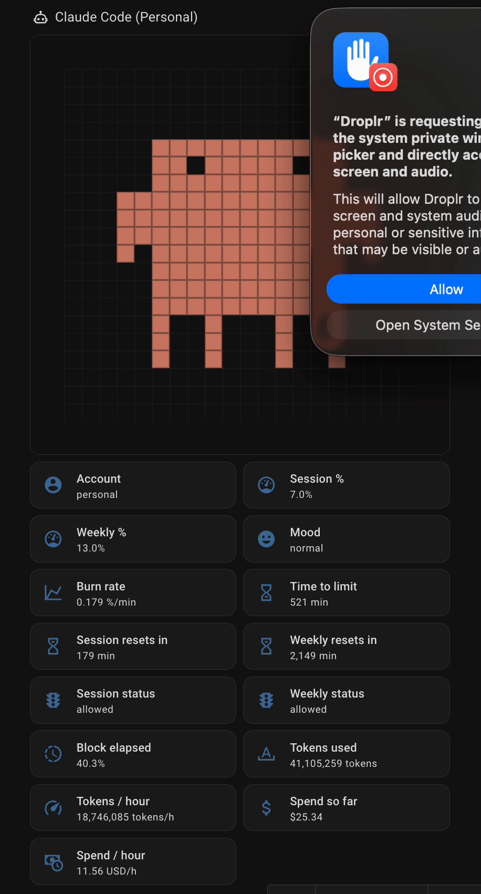

ccusage-mqtt watches Claude Code's local session files and the Anthropic rate-limit headers, then publishes 15 sensors to MQTT — auto-discovered into a single Home Assistant device with a pre-built Lovelace dashboard. No API key. Pro/Max + Enterprise.
Designed to slot into a homelab in under five minutes and disappear into your dashboard from there.
Burn-rate sensor classifies your session into idle / normal / active / heavy — same thresholds as Clawdmeter.
5h + 7d utilization, burn rate, mood, time-to-limit, tokens, spend. Auto-discovered into one HA device.
Reads the OAuth token Claude Code already stored at ~/.claude/.credentials.json. Zero extra setup.
Drop the included YAML into Home Assistant's Raw configuration editor and the sensors light up a card with mood, gauges, burn rate, and tokens — instantly.
Entity IDs follow sensor.<base_topic>_<sensor_id>. Set MQTT_BASE_TOPIC in setup and you're done.
From the anthropic-ratelimit-unified-* response headers on every probe.
Local Claude Code session JSONLs parsed by ccusage.
Computed from the inputs above on every publish cycle.
Borrowed verbatim from the Clawdmeter firmware so the two agree if you run both. Burn rate is %-of-window per minute.
Needs Python 3.12+ and Node.js — the publisher shells out to the ccusage CLI. Then it's just systemd.
Drop into a systemd user unit — there's a template in the README. For Home Assistant, grab the ready-to-paste Lovelace YAML on the dashboard page.
ccusage-mqtt.service from the README to ~/.config/systemd/user/.systemctl --user enable --now ccusage-mqtt.Mood at a glance, current 5h / 7d gauges, burn rate, time-to-limit, tokens used + spend — all auto-wired the moment HA discovers the device.
Settings → Dashboards → ⋮ → Raw configuration editor and you're done.
title: CCusage
views:
- title: Usage
path: usage
type: sections
max_columns: 1
sections:
- type: grid
cards:
- type: heading
heading: Claude Code (Personal)
heading_style: title
icon: mdi:robot-outline
- type: conditional
conditions:
- condition: state
entity: sensor.claude_code_usage_mood
state: idle
card:
type: iframe
url: >-
https://claudepix.vercel.app/animations/idle_breathe.html?speed=1
aspect_ratio: 100%
grid_options:
columns: 12
rows: 4
- type: conditional
conditions:
- condition: state
entity: sensor.claude_code_usage_mood
state: normal
card:
type: iframe
url: >-
https://claudepix.vercel.app/animations/idle_look_around.html?speed=1
aspect_ratio: 100%
grid_options:
columns: 12
rows: 4
- type: conditional
conditions:
- condition: state
entity: sensor.claude_code_usage_mood
state: active
card:
type: iframe
url: https://claudepix.vercel.app/animations/work_coding.html?speed=1
aspect_ratio: 100%
grid_options:
columns: 12
rows: 4
- type: conditional
conditions:
- condition: state
entity: sensor.claude_code_usage_mood
state: heavy
card:
type: iframe
url: https://claudepix.vercel.app/animations/work_think.html?speed=1
aspect_ratio: 100%
grid_options:
columns: 12
rows: 4
- type: tile
entity: sensor.claude_code_usage_account
name: Account
- type: tile
entity: sensor.claude_code_usage_session
name: Session %
- type: tile
entity: sensor.claude_code_usage_weekly
name: Weekly %
- type: tile
entity: sensor.claude_code_usage_mood
name: Mood
- type: tile
entity: sensor.claude_code_usage_burn_rate
name: Burn rate
- type: tile
entity: sensor.claude_code_usage_time_to_limit
name: Time to limit
- type: tile
entity: sensor.claude_code_usage_session_resets_in
name: Session resets in
- type: tile
entity: sensor.claude_code_usage_weekly_resets_in
name: Weekly resets in
- type: tile
entity: sensor.claude_code_usage_session_status
name: Session status
- type: tile
entity: sensor.claude_code_usage_weekly_status
name: Weekly status
- type: tile
entity: sensor.claude_code_usage_block_elapsed
name: Block elapsed
- type: tile
entity: sensor.claude_code_usage_tokens_used
name: Tokens used
- type: tile
entity: sensor.claude_code_usage_tokens_per_hour
name: Tokens / hour
- type: tile
entity: sensor.claude_code_usage_spend_so_far
name: Spend so far
- type: tile
entity: sensor.claude_code_usage_spend_per_hour
name: Spend / hour